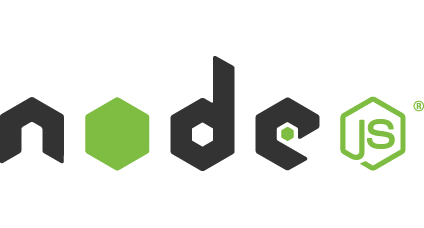

Learning Management System
Bringing academia online!
Bringing academia online!
by
M. Ashar Irfan
Amr Alshami
Nisa Anwaar
Ayesha Haider
earing - because you use it to deliver education/training
anagement - because it helps you organize the process
ystem - because LMS is a computer system
LMS is a software that helps you create, manage and deliver eLearning courses.
→ Business of all size
→ Various Organizations
→ Government Agencies
→ Educational Institutes
→ Online and eLearning
→ High growing industry, expected to reach $7.8 billion by 2018.
→ 87% of respondents use a web-based LMS.
→ 27% dissatisfaction rate.
→ Most desired feature is Live/video conferencing.
→ E-learning holds a very bright future in Pakistan.
eLearning trend is growing in Pakistan & there are no major interactive LMS services in Pakistan.
→ Open Source
→ Easy Content Management
→ Plugins
→ Frequent Security Updates
→ Cost
→ Wide..
→ But limited yet!
→ E-learn Punjab
→ Courses
→ Lectures

→ Timed quizzes
→ MCQs
→ Deadlines
→ Could be used for final evaluation
→ Bridging the communication gap
→ Another forum for class interactions
→ Automatic Quiz Grading

→ Better management for universities with multiple departments
→ Offers modular approach
→ Giving an entrepreneurial opportunity to teachers
SVN
GIT
Package Manager
Node.Js
Gulp
Preprocessor
SASS
Models = WP Plugin API
Views = WP Theme API
Controllers = WP Rewrite API